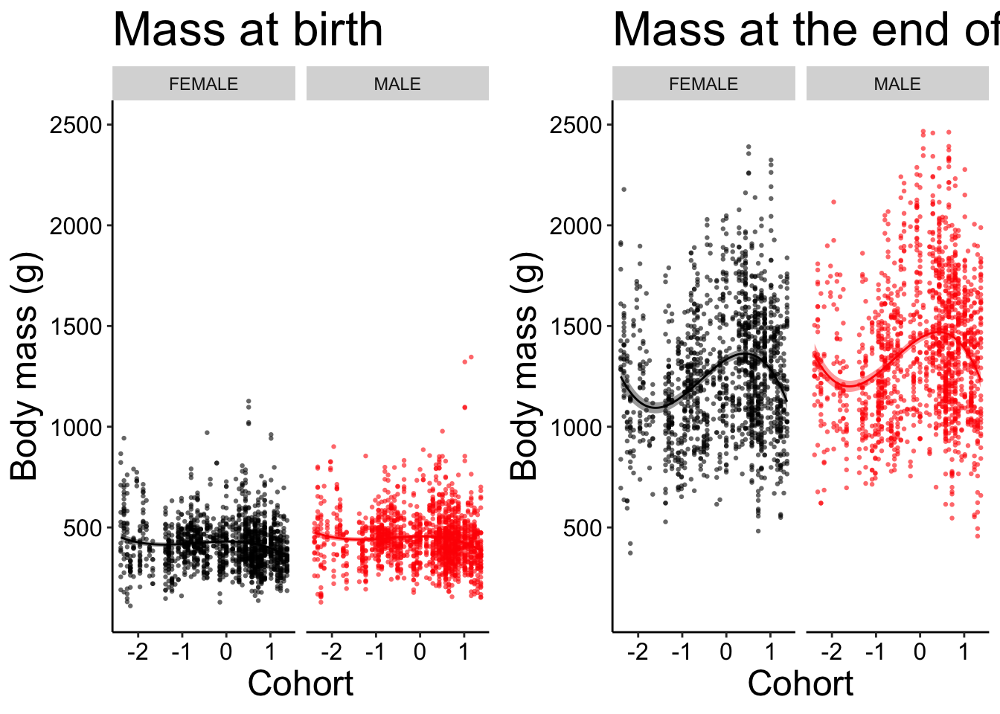

Coping with climate change.
Implications of the Yellow-Bellied Marmot’s (Marmota flavivientris) body mass evolution in the last half-century.
Introduction
Climate change (C.C.)
The importance of C.C. and its impact in the near future is no longer in doubt (Intergovernmental Panel On Climate Change (Ipcc) 2023)
Body size as a Life-History Traits (LHT) and expected effect of global warming
LHT: traits impacting directly survival and reproduction, so individual’s fitness (Roff 1992)
LHT coevolution
Traits can’t evolve alone Gould & Lewontin (1979)
POLS
Phenotypic plasticity vs microevolution
I * E, G * E (individual variation in their plasticity)
Link with body mass, individual can vary in their growing speed
I * A and G * A
Species and study site
Phenological mismatch??
Chapter 1 - Mechanisms
Marmot’s Biology: What mechanisms are behind the body mass increase?
Growth? Baseline? Both?
Double random (Intercept, Slope)
Chapter 2 - Methodology
Methodology: \(I * E\) detection with double random mixed models
(Nussey et al. 2007) –> double random
So we’re doing something different –> examining the residuals of the model (if I * E, still a lot of residual variance ?)
**Look at this one: (Westneat et al. 2015)
Chapter 3 - Triggers
Marmot’s Biology: Which environemntal factors have triggered the phenotypic shift?
E1 - E10 (T°, Precipitation, …), Seasonal Gradient
Predators, Diet?
Chapter 4 - Implications
Marmot’s Biology: What could be the implications of that for the population’s future?
Manuscript models Body Mass/active season with survival
References
References
Intergovernmental Panel On Climate Change (Ipcc) (2023), Climate Change 2022 – Impacts, Adaptation and Vulnerability: Working Group II Contribution to the Sixth Assessment Report of the Intergovernmental Panel on Climate Change, Cambridge University Press. https://doi.org/10.1017/9781009325844.
Nussey, D. H., Wilson, A. J., and Brommer, J. E. (2007), “The evolutionary ecology of individual phenotypic plasticity in wild populations,” Journal of Evolutionary Biology, 20, 831–844. https://doi.org/10.1111/j.1420-9101.2007.01300.x.
Roff, D. A. (1992), “The evolution of life histories : Theory and analysis.”
Westneat, D. F., Wright, J., and Dingemanse, N. J. (2015), “The biology hidden inside residual within-individual phenotypic variation,” Biological Reviews, 90, 729–743. https://doi.org/10.1111/brv.12131.